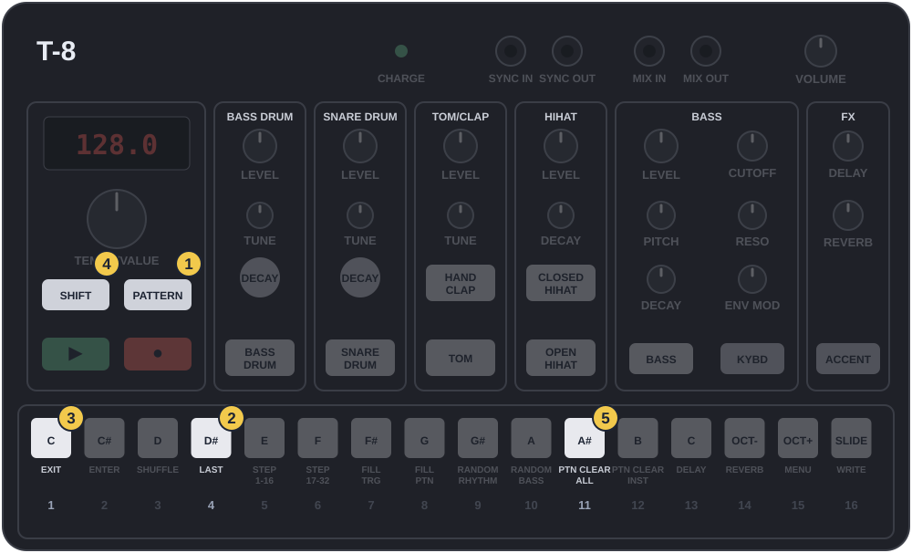

1.1
בנק 4, תבנית 1
PATTERN + 4 · PTN CLEAR ALLמתחילים כש:■ עצורהטי־8 עצור

- PATTERN
- לחצן 4
- לחצן 1
- SHIFT
- לחצן 11
אפשר לגעת בתמונה כדי להגדיל.
- בנק 4: ✋החזק PATTERN ו־👆לחץ לחצן 4. 🖐שחרר.
- תבנית 1: 👆לחץ PATTERN ו־👆לחץ לחצן 1.
- מחיקה: ✋החזק SHIFT ו־👆לחץ לחצן 11 (PTN CLEAR ALL). 🖐שחרר.
הצלחת אם: ▶ לא משמיע כלום. דף נקי.
כל השיעור בבנק 4, תבניות 1 עד 6, כדי לא לגעת בתבניות 13 עד 16 של בנק 1. שמירה כאן מחליפה את מה שהיה בתבניות האלה מהמפעל.
להבין
בכל סגנון בשלבים הבאים חוזרים על שלושת הצעדים האלה, רק עם תבנית אחרת: 2, 3, 4, 5, 6. ככה כל סגנון נשמר במקום משלו, ובסוף אפשר לעבור ביניהם בזמן נגינה.